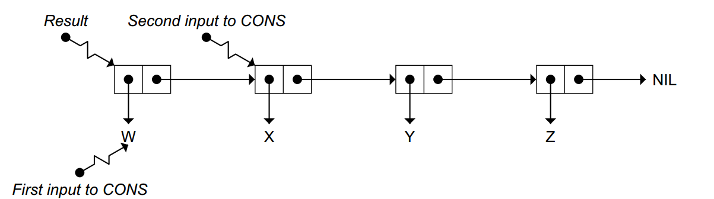
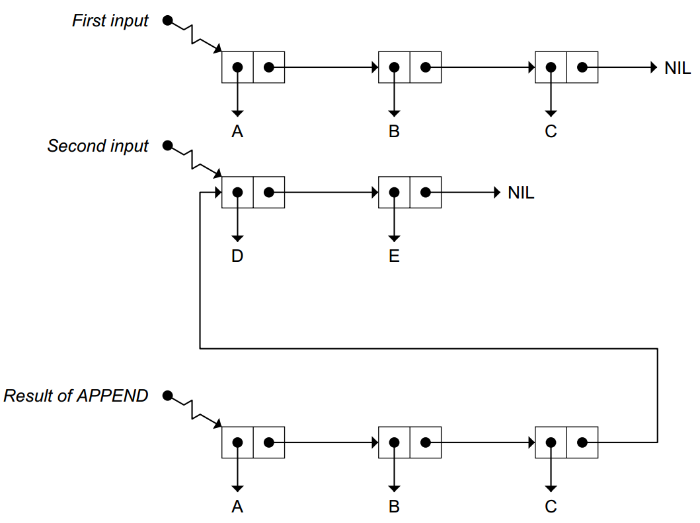
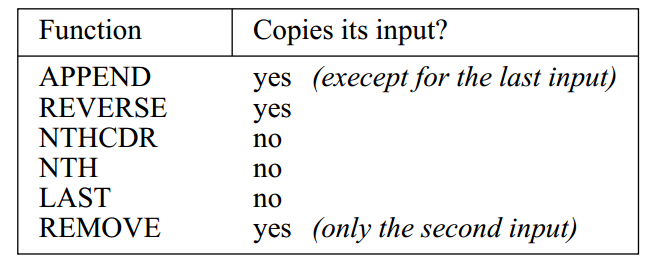
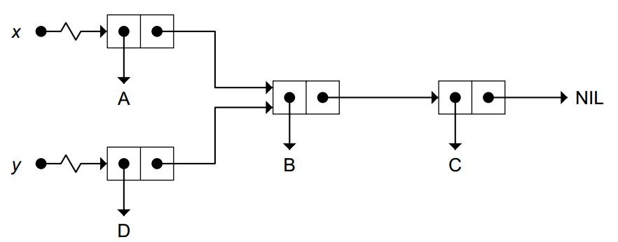
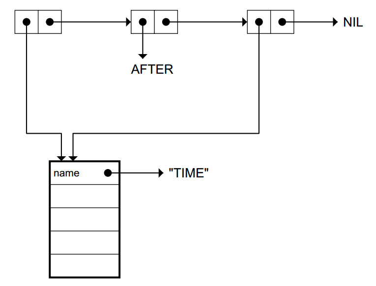

List Data Structures
CONS, LIST, APPEND, LENGT, REVERSE, NTH, NTHCDR, LAST, and REMOVE.
- List functions: APPEND, REVERSE, NTH, NTHCDR, LAST, REMOVE.
- Set functions: UNION, INTERSECTION, SET-DIFFERENCE,SET-EXCLUSIVE-OR, MEMBER, SUBSETP, REMOVE-DUPLICATES. Table functions: ASSOC, RASSOC.
Tree functions: SUBST, SUBLIS. Additional equality functions: EQ, EQL, EQUALP, =. Keyword predicate: KEYWORDP.
cons
(cons ’w ’(x y z)) ⇒ (w x y z)
(cons ’(a b c) ’d) ⇒ ((a b c) . d)

append
> (setf who ’(only the good))
(ONLY THE GOOD)
> (append who ’(die young))
(ONLY THE GOOD DIE YOUNG)
> who
(ONLY THE GOOD)

attention
first input must be a list
(append ’a ’(b c d)) ⇒ Error! A is not a list.
(append ’(w x y) ’z) ⇒ (W X Y . Z)
vs cons list append
- CONS creates one new conscell. It is often used to add an element to the front of a list.
- LIST makes new lists by acceptingan arbitrary number of inputs and building a chain of cons cells ending in NIL. The car of each cell points to the corresponding input.
- APPEND appends lists together by copyingits first input and making the cdr of the last cell of the copypoint to the second input. Itis an error for the first input to APPEND to be a non-list.
reverse
reverse top-level list
> (reverse ’((my oversight)
(your blunder)
(his negligence)))
((HIS NEGLIGENCE) (YOUR BLUNDER) (MY OVERSIGHT))
nthcdr nth
nthcdr return list (nthcdr 3 ’(a b c)) ⇒ nil (nthcdr 5 ’(a b c)) ⇒ nil (nthcdr 2 ’(a b c . d)) ⇒ (c . d)
nth return con cell value
(defun nth (n x)
"Returns the Nth element of the list X,
counting from 0."
(car (nthcdr n x)))
last
LAST returns the last cons cell of a list
(last ’(all is forgiven)) ⇒ (forgiven)
(last nil) ⇒ nil
(last ’(a b c . d)) ⇒ (c . d)
(last ’nevermore) ⇒ Error! NEVERMORE is not a list.
remove
> (setf spell ’(a b r a c a d a b r a))
(A B R A C A D A B R A)
> (remove ’a spell)
(B R C D B R)
> spell
(A B R A C A D A B R A)
> keyword
> (remove ’(5 diamonds) cards)
((3 CLUBS) (5 DIAMONDS) (ACE SPADES))
> (remove ’(5 diamonds) cards :test #’equal)
((3 CLUBS) (ACE SPADES))
vs

LISTS AS SETS
member
MEMBER return the sublist beginning with the item sought made ita much more useful function
> (setf ducks ’(huey dewey louie)) Create a set of ducks.
(HUEY DEWEY LOUIE)
> (member ’dewey ducks) Is Dewey a duck?
(DEWEY LOUIE) Non-NIL result: yes.
> (member ’mickey ducks) Is Mickey a duck?
NIL NIL: no.
> MEMBER uses EQL to test whether an item appears in a set
(setf cards
’((3 clubs) (5 diamonds) (ace spades)))
(member ’(5 diamonds) cards) ⇒ nil
> (member ’(5 diamonds) cards :test #’equal)
((5 DIAMONDS) (ACE SPADES))
intersection
交集
> (intersection ’(fred john mary)
’(sue mary fred))
(FRED MARY)
> (intersection ’(a s d f g)
’(v w s r a))
(A S)
> (intersection ’(foo bar baz)
’(xam gorp bletch))
NIL
union
并集
> (union ’(fred john mary)
’(sue mary fred))
(FRED JOHN MARY SUE)
set-difference
return first input 并-交
> (set-difference ’(alpha bravo charlie delta)
’(bravo charlie))
(ALPHA DELTA)
SUBSETP
predicate contained relation-ship
(subsetp ’(a i) ’(a e i o u)) ⇒ t
(subsetp ’(a x) ’(a e i o u)) ⇒ nil
LISTS AS TABLES
’((one un)
(two deux))))
'((object1 large green shiny cube)
(object2 small red dull metal cube))
assoc rassoc
(assoc ’three words) ⇒ (three trois)
(rassoc ’trois words) ⇒ (three trois)
Lisp Toolkit: SDRAW
a tool for drawing conscell representations of lists
> (sdraw ’(alpha (bravo) charlie))
[*|*]--->[*|*]--------->[*|*]--->NIL
| ||
v vv
ALPHA [*|*]--->NILCHARLIE
|
v
BRAVO
SDRAW-LOOP acts like a readeval-print loop except it draws the result aswell as printing it.
> (sdraw-loop)
Type any Lisp expression, or (ABORT) to exit.
S> (cons ’(birds dont have) ’noses)
[*|*]--->NOSES
|
v
[*|*]--->[*|*]--->[*|*]--->NIL
| | |
v v v
BIRDS DONTHAVE
Result: ((BIRDSDONT HAVE) . NOSES)
tree
Trees are nested lists
subst
> (subst ’bill ’fred ’(keep off the grass))
(KEEP OFF THE GRASS)
> (subst ’on ’off ’(keep off the grass))
(KEEP ON THE GRASS)
sublis
like SUBST, except it can make many substitutions simultaneously.
The first input to SUBLIS is a table whose entries are dotted pairs. The second input is the list in which the substitutions are to be made.
> (sublis ’((roses . violets) (red . blue))
’(roses are red))
(VIOLETS ARE BLUE)
(setf dotted-words
’((one .un)
(two .deux)
(three . trois)
(four .quatre)
(five .cinq)))
> (sublis dotted-words ’(three one four one five))
(TROIS UN QUATRE UN CINQ)
EFFICIENCYOF LIST OPERATIONS
;;;create n + 1 cells
(defun add-to-end-1 (x y)
(append x (list y)))
;;;create n + 1 + ( n + 1 )cells
(defun add-to-end-2 (x y)
(reverse (cons y (reverse x))))
SHARED STRUCTURE
Lists that are typed in fromthe keyboard will never share structure, because READ builds every listit sees from fresh cons cells. But using CAR, CDR, and CONS it is possible to create lists that do share structure.
> (setf x ’(a b c))
(A B C)
> (setf y (cons ’d (cdr x)))
(D B C)

EQUALITY OF OBJECTS
In Lisp, symbols are unique
(TIME AFTER
TIME)

- EQ is the fastest equality test:It compares addresses EQ should never be used to compare numbers
- EQL is like EQ except it can safely compare numbers of the same type
- EQUAL is the predicate beginners should use. It compares lists element by element
- EQUALP is more liberal than EQUAL: It ignores case distinctions in strings, among other things.
- = is the most efficient way to compare numbers
summary
(setf x1 (list ’a ’b ’c)) Make a fresh list (A B C)
(A B C)
(setf x2 (list ’a ’b ’c)) Make another list (A B C).
(A B C)
(equal x1 x2) The lists are EQUAL.
T
(eq x1 x2) The two lists are not EQ.
NIL
(eql ’foo ’foo) ⇒ t
(eql 3 3) ⇒ t
(eql 3 3.0) ⇒ nil Different types.
(= 3 3.0) ⇒ t
(= ’foo ’foo) ⇒ Error! FOO is not a number.
(equal "foo bar" "Foo BAR") ⇒ nil
(equalp "foo bar" "Foo BAR") ⇒ t
KEYWORD ARGUMENTS
(setf text ’(b a n a n a - p a n d a))
> (remove ’a text) Remove all As.
(B N N - P N D)
> (remove ’a text :count 3) Remove 3 As.
(B N N - P A N D A)
> (remove ’a text :count 2 :from-end t)
(B A N A N A - P N D)
A keyword is a special type of symbol
(keywordp :count) ⇒ t
Other functions that accept a :TEST keywordare UNION, INTERSECTION, SET-DIFFERENCE, ASSOC, RASSOC,SUBST, and SUBLIS.t
use equal instead of eql
(setf cards
’((3 clubs) (5 diamonds) (ace spades)))
(member ’(5 diamonds) cards) ⇒ nil
> (member ’(5 diamonds) cards :test #’equal)
((5 DIAMONDS) (ACE SPADES))
> (remove ’(5 diamonds) cards)
((3 CLUBS) (5 DIAMONDS) (ACE SPADES))
> (remove ’(5 diamonds) cards :test #’equal)
((3 CLUBS) (ACE SPADES))